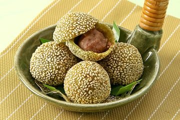
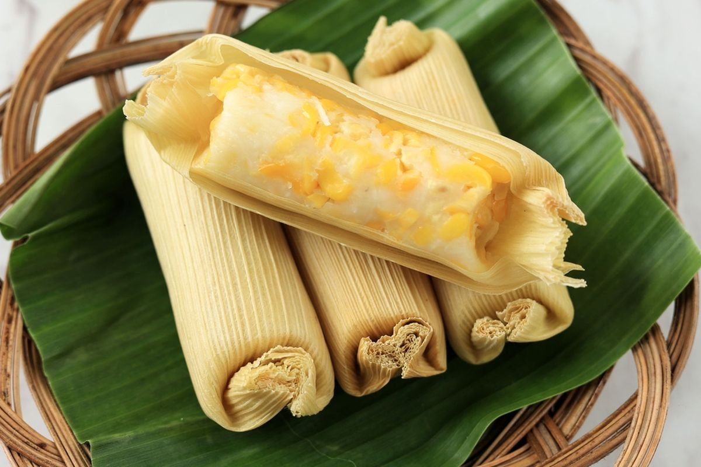
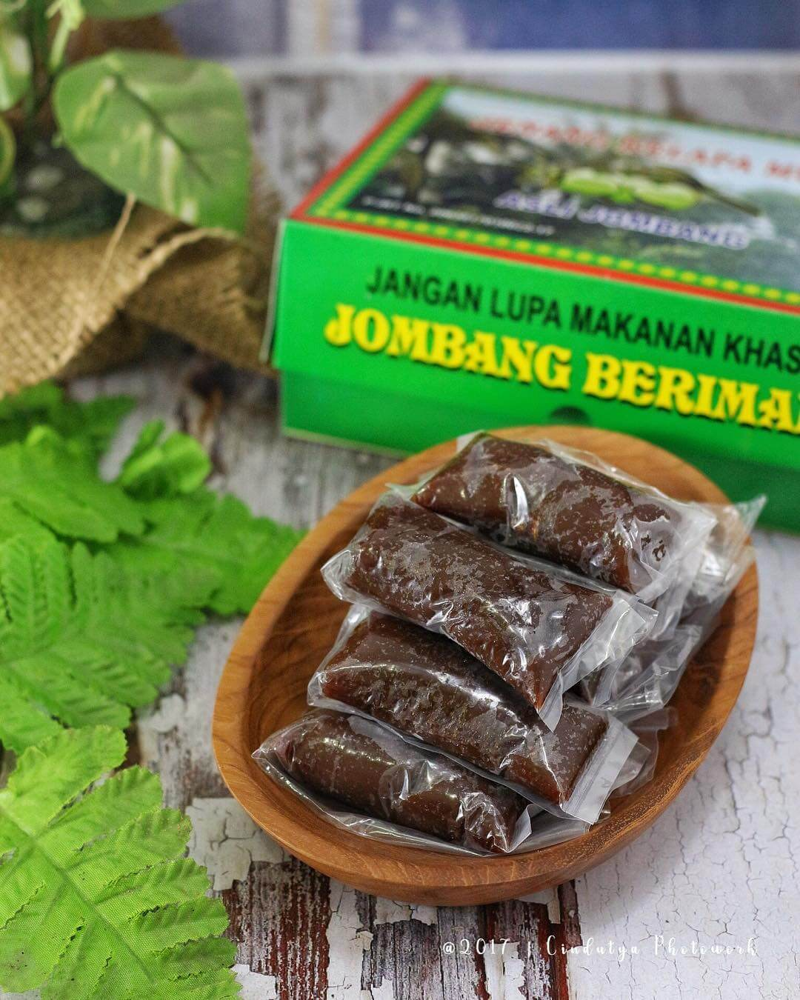
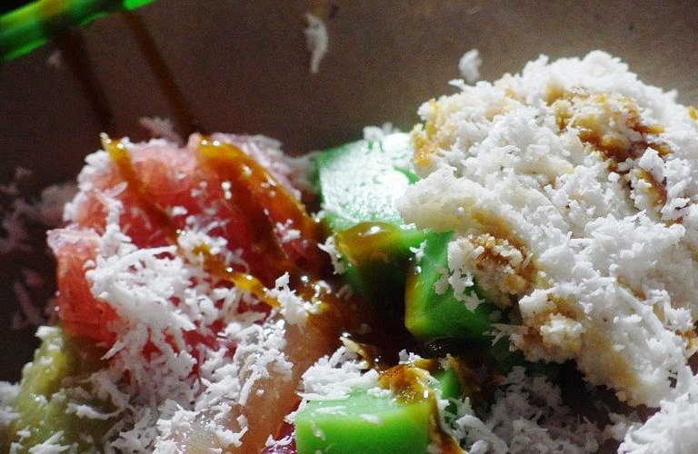

Onde-onde kacang merah khas Jombang memiliki rasa manis gurih dengan kulit yang kenyal dan taburan wijen di permukaannya. Isian kacang merahnya lembut sehingga cocok dinikmati sebagai camilan tradisional.

Lepet jagung merupakan olahan tradisional yang terbuat dari jagung parut dicampur kelapa dan gula, lalu dibungkus daun jagung. Rasanya manis legit dan sering dijadikan hidangan khas saat acara tertentu.

Jenang kupas adalah jajanan khas Jombang dengan tekstur lembut dan rasa manis gurih. Terbuat dari ketan, santan, dan gula merah yang dimasak hingga legit, makanan ini kerap menjadi suguhan pada acara adat maupun hajatan.

Ketan Merdeka merupakan kuliner legendaris Jombang yang terkenal sejak lama. Nasi ketan disajikan dengan taburan parutan kelapa dan pilihan lauk seperti serundeng atau ayam suwir, menghasilkan cita rasa sederhana namun nikmat.